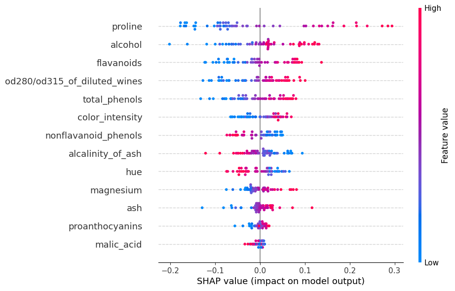

#importamos las librerias necesarias a utilizar
import numpy as np
import tensorflow as tf
from tensorflow.keras.models import Sequential
from tensorflow.keras.layers import Dense, Dropout
from sklearn.datasets import load_wine
from sklearn.model_selection import train_test_split
from sklearn.preprocessing import StandardScaler
from sklearn.preprocessing import OneHotEncoder
from sklearn.metrics import accuracy_score
import matplotlib.pyplot as plt
%matplotlib inlineIntroducción a la explicabilidad e interpretabilidad en modelos

En este notebook encontrarás material introductorio para entender los conceptos de expicabilidad e interpretabilidad en modelos de inteligencia artificial.
Abordaremos el siguiente paso a paso:
- Cargaremos el dataset load_wine y construiremos una red neuronal para resolver dicho problema.
- Utilizaremos la técnica SHAP para explicar nuestro modelo.
Dataset
El dataset cuenta con 178 registros, cada uno con 13 caracteristicas:
- Alcohol
- Malic Acid
- Ash
- Alcalinity of Ash
- Magnesium
- Total Phenols
- Flavanoids
- Nonflavanoid Phenols
- Proanthocyanins
- Colour Intensity
- Hue
- OD280/OD315 of diluted wines
- Proline
El dataset contiene 3 clases diferentes.
#Cargamos el conjunto de datos y procesamos
wine = load_wine()
X, y = wine.data, wine.target
scaler = StandardScaler()
X = scaler.fit_transform(X)
encoder = OneHotEncoder(sparse_output=False)
y = encoder.fit_transform(y.reshape(-1, 1))
X_train, X_test, y_train, y_test = train_test_split(X, y, test_size=0.3, random_state=42)
print("Dimension datos de entrenamiento: ", X_train.shape)
print("Dimension datos de prueba: ", X_test.shape)Dimension datos de entrenamiento: (124, 13)
Dimension datos de prueba: (54, 13)#Definimos la red neuronal a entrenar y compilamos el modelo
model = Sequential()
model.add(Dense(64, input_shape=(X_train.shape[1],), activation='relu'))
model.add(Dense(64, activation='relu'))
model.add(Dropout(0.5))
model.add(Dense(y_train.shape[1], activation='softmax'))
model.compile(optimizer='adam', loss='categorical_crossentropy', metrics=['accuracy'])/usr/local/lib/python3.10/dist-packages/keras/src/layers/core/dense.py:87: UserWarning: Do not pass an `input_shape`/`input_dim` argument to a layer. When using Sequential models, prefer using an `Input(shape)` object as the first layer in the model instead.
super().__init__(activity_regularizer=activity_regularizer, **kwargs)#Entrenamos la red
history = model.fit(X_train, y_train, epochs=50, batch_size=32, validation_split=0.2, verbose=1)Epoch 1/50 4/4 ━━━━━━━━━━━━━━━━━━━━ 5s 457ms/step - accuracy: 0.4024 - loss: 1.0690 - val_accuracy: 0.4800 - val_loss: 0.9569 Epoch 2/50 4/4 ━━━━━━━━━━━━━━━━━━━━ 1s 10ms/step - accuracy: 0.5859 - loss: 0.9022 - val_accuracy: 0.7200 - val_loss: 0.8264 Epoch 3/50 4/4 ━━━━━━━━━━━━━━━━━━━━ 0s 9ms/step - accuracy: 0.5531 - loss: 0.9294 - val_accuracy: 0.6800 - val_loss: 0.7181 Epoch 4/50 4/4 ━━━━━━━━━━━━━━━━━━━━ 0s 9ms/step - accuracy: 0.6510 - loss: 0.7846 - val_accuracy: 0.8000 - val_loss: 0.6285 Epoch 5/50 4/4 ━━━━━━━━━━━━━━━━━━━━ 0s 8ms/step - accuracy: 0.7954 - loss: 0.6378 - val_accuracy: 0.8400 - val_loss: 0.5544 Epoch 6/50 4/4 ━━━━━━━━━━━━━━━━━━━━ 0s 9ms/step - accuracy: 0.8550 - loss: 0.5862 - val_accuracy: 0.8800 - val_loss: 0.4913 Epoch 7/50 4/4 ━━━━━━━━━━━━━━━━━━━━ 0s 9ms/step - accuracy: 0.8047 - loss: 0.5755 - val_accuracy: 0.9200 - val_loss: 0.4398 Epoch 8/50 4/4 ━━━━━━━━━━━━━━━━━━━━ 0s 9ms/step - accuracy: 0.9135 - loss: 0.4490 - val_accuracy: 0.9200 - val_loss: 0.3962 Epoch 9/50 4/4 ━━━━━━━━━━━━━━━━━━━━ 0s 9ms/step - accuracy: 0.8631 - loss: 0.4508 - val_accuracy: 0.9200 - val_loss: 0.3582 Epoch 10/50 4/4 ━━━━━━━━━━━━━━━━━━━━ 0s 9ms/step - accuracy: 0.9351 - loss: 0.3836 - val_accuracy: 0.9200 - val_loss: 0.3259 Epoch 11/50 4/4 ━━━━━━━━━━━━━━━━━━━━ 0s 9ms/step - accuracy: 0.9187 - loss: 0.3678 - val_accuracy: 0.9600 - val_loss: 0.2962 Epoch 12/50 4/4 ━━━━━━━━━━━━━━━━━━━━ 0s 9ms/step - accuracy: 0.9166 - loss: 0.3108 - val_accuracy: 0.9600 - val_loss: 0.2697 Epoch 13/50 4/4 ━━━━━━━━━━━━━━━━━━━━ 0s 9ms/step - accuracy: 0.9599 - loss: 0.2927 - val_accuracy: 0.9600 - val_loss: 0.2453 Epoch 14/50 4/4 ━━━━━━━━━━━━━━━━━━━━ 0s 9ms/step - accuracy: 0.9816 - loss: 0.2769 - val_accuracy: 0.9600 - val_loss: 0.2245 Epoch 15/50 4/4 ━━━━━━━━━━━━━━━━━━━━ 0s 10ms/step - accuracy: 0.9754 - loss: 0.2512 - val_accuracy: 0.9600 - val_loss: 0.2060 Epoch 16/50 4/4 ━━━━━━━━━━━━━━━━━━━━ 0s 9ms/step - accuracy: 0.9598 - loss: 0.2288 - val_accuracy: 0.9600 - val_loss: 0.1885 Epoch 17/50 4/4 ━━━━━━━━━━━━━━━━━━━━ 0s 9ms/step - accuracy: 0.9661 - loss: 0.2238 - val_accuracy: 0.9600 - val_loss: 0.1739 Epoch 18/50 4/4 ━━━━━━━━━━━━━━━━━━━━ 0s 12ms/step - accuracy: 0.9846 - loss: 0.1901 - val_accuracy: 0.9600 - val_loss: 0.1605 Epoch 19/50 4/4 ━━━━━━━━━━━━━━━━━━━━ 0s 12ms/step - accuracy: 0.9228 - loss: 0.2142 - val_accuracy: 0.9600 - val_loss: 0.1489 Epoch 20/50 4/4 ━━━━━━━━━━━━━━━━━━━━ 0s 9ms/step - accuracy: 0.9784 - loss: 0.1613 - val_accuracy: 0.9600 - val_loss: 0.1389 Epoch 21/50 4/4 ━━━━━━━━━━━━━━━━━━━━ 0s 11ms/step - accuracy: 0.9475 - loss: 0.1762 - val_accuracy: 0.9600 - val_loss: 0.1297 Epoch 22/50 4/4 ━━━━━━━━━━━━━━━━━━━━ 0s 9ms/step - accuracy: 0.9753 - loss: 0.1485 - val_accuracy: 0.9600 - val_loss: 0.1224 Epoch 23/50 4/4 ━━━━━━━━━━━━━━━━━━━━ 0s 9ms/step - accuracy: 0.9629 - loss: 0.1458 - val_accuracy: 0.9600 - val_loss: 0.1158 Epoch 24/50 4/4 ━━━━━━━━━━━━━━━━━━━━ 0s 9ms/step - accuracy: 0.9845 - loss: 0.1045 - val_accuracy: 0.9600 - val_loss: 0.1095 Epoch 25/50 4/4 ━━━━━━━━━━━━━━━━━━━━ 0s 9ms/step - accuracy: 0.9815 - loss: 0.1060 - val_accuracy: 0.9600 - val_loss: 0.1036 Epoch 26/50 4/4 ━━━━━━━━━━━━━━━━━━━━ 0s 9ms/step - accuracy: 0.9753 - loss: 0.1269 - val_accuracy: 0.9600 - val_loss: 0.0981 Epoch 27/50 4/4 ━━━━━━━━━━━━━━━━━━━━ 0s 9ms/step - accuracy: 0.9506 - loss: 0.1140 - val_accuracy: 1.0000 - val_loss: 0.0927 Epoch 28/50 4/4 ━━━━━━━━━━━━━━━━━━━━ 0s 10ms/step - accuracy: 0.9690 - loss: 0.1359 - val_accuracy: 1.0000 - val_loss: 0.0889 Epoch 29/50 4/4 ━━━━━━━━━━━━━━━━━━━━ 0s 9ms/step - accuracy: 0.9784 - loss: 0.1052 - val_accuracy: 1.0000 - val_loss: 0.0858 Epoch 30/50 4/4 ━━━━━━━━━━━━━━━━━━━━ 0s 9ms/step - accuracy: 0.9845 - loss: 0.0811 - val_accuracy: 0.9600 - val_loss: 0.0830 Epoch 31/50 4/4 ━━━━━━━━━━━━━━━━━━━━ 0s 9ms/step - accuracy: 0.9845 - loss: 0.0730 - val_accuracy: 0.9600 - val_loss: 0.0809 Epoch 32/50 4/4 ━━━━━━━━━━━━━━━━━━━━ 0s 14ms/step - accuracy: 0.9845 - loss: 0.0843 - val_accuracy: 0.9600 - val_loss: 0.0789 Epoch 33/50 4/4 ━━━━━━━━━━━━━━━━━━━━ 0s 13ms/step - accuracy: 0.9939 - loss: 0.0606 - val_accuracy: 0.9600 - val_loss: 0.0763 Epoch 34/50 4/4 ━━━━━━━━━━━━━━━━━━━━ 0s 10ms/step - accuracy: 1.0000 - loss: 0.0582 - val_accuracy: 0.9600 - val_loss: 0.0733 Epoch 35/50 4/4 ━━━━━━━━━━━━━━━━━━━━ 0s 9ms/step - accuracy: 0.9845 - loss: 0.0953 - val_accuracy: 0.9600 - val_loss: 0.0708 Epoch 36/50 4/4 ━━━━━━━━━━━━━━━━━━━━ 0s 9ms/step - accuracy: 0.9690 - loss: 0.0910 - val_accuracy: 0.9600 - val_loss: 0.0694 Epoch 37/50 4/4 ━━━━━━━━━━━━━━━━━━━━ 0s 8ms/step - accuracy: 0.9960 - loss: 0.0598 - val_accuracy: 0.9600 - val_loss: 0.0684 Epoch 38/50 4/4 ━━━━━━━━━━━━━━━━━━━━ 0s 9ms/step - accuracy: 0.9939 - loss: 0.0693 - val_accuracy: 0.9600 - val_loss: 0.0696 Epoch 39/50 4/4 ━━━━━━━━━━━━━━━━━━━━ 0s 10ms/step - accuracy: 0.9939 - loss: 0.0582 - val_accuracy: 0.9600 - val_loss: 0.0703 Epoch 40/50 4/4 ━━━━━━━━━━━━━━━━━━━━ 0s 9ms/step - accuracy: 0.9815 - loss: 0.0470 - val_accuracy: 0.9600 - val_loss: 0.0717 Epoch 41/50 4/4 ━━━━━━━━━━━━━━━━━━━━ 0s 9ms/step - accuracy: 0.9753 - loss: 0.0844 - val_accuracy: 1.0000 - val_loss: 0.0715 Epoch 42/50 4/4 ━━━━━━━━━━━━━━━━━━━━ 0s 9ms/step - accuracy: 1.0000 - loss: 0.0556 - val_accuracy: 1.0000 - val_loss: 0.0696 Epoch 43/50 4/4 ━━━━━━━━━━━━━━━━━━━━ 0s 9ms/step - accuracy: 0.9939 - loss: 0.0501 - val_accuracy: 1.0000 - val_loss: 0.0650 Epoch 44/50 4/4 ━━━━━━━━━━━━━━━━━━━━ 0s 9ms/step - accuracy: 1.0000 - loss: 0.0542 - val_accuracy: 1.0000 - val_loss: 0.0614 Epoch 45/50 4/4 ━━━━━━━━━━━━━━━━━━━━ 0s 9ms/step - accuracy: 1.0000 - loss: 0.0597 - val_accuracy: 1.0000 - val_loss: 0.0559 Epoch 46/50 4/4 ━━━━━━━━━━━━━━━━━━━━ 0s 9ms/step - accuracy: 0.9753 - loss: 0.0617 - val_accuracy: 1.0000 - val_loss: 0.0512 Epoch 47/50 4/4 ━━━━━━━━━━━━━━━━━━━━ 0s 9ms/step - accuracy: 0.9845 - loss: 0.0432 - val_accuracy: 1.0000 - val_loss: 0.0481 Epoch 48/50 4/4 ━━━━━━━━━━━━━━━━━━━━ 0s 11ms/step - accuracy: 1.0000 - loss: 0.0344 - val_accuracy: 1.0000 - val_loss: 0.0460 Epoch 49/50 4/4 ━━━━━━━━━━━━━━━━━━━━ 0s 10ms/step - accuracy: 1.0000 - loss: 0.0337 - val_accuracy: 1.0000 - val_loss: 0.0444 Epoch 50/50 4/4 ━━━━━━━━━━━━━━━━━━━━ 0s 9ms/step - accuracy: 1.0000 - loss: 0.0323 - val_accuracy: 1.0000 - val_loss: 0.0441
y_pred = model.predict(X_test)
y_pred_classes = np.argmax(y_pred, axis=1)
y_test_classes = np.argmax(y_test, axis=1)
accuracy = accuracy_score(y_test_classes, y_pred_classes)
print(f"Accuracy en el conjunto de prueba: {accuracy:.4f}")2/2 ━━━━━━━━━━━━━━━━━━━━ 0s 4ms/step Accuracy en el conjunto de prueba: 1.0000
plt.figure(figsize=(6, 3))
plt.plot(history.history['accuracy'], label='accuray en entrenamiento')
plt.plot(history.history['val_accuracy'], label='accuracy de validación')
plt.xlabel('épocas')
plt.ylabel('Accuracy')
plt.legend()
plt.title('Rendimiento del modelo durante el entrenamiento')
plt.grid()
plt.show()
- Ahora intentemos explicar/interpretar la red. Que caracteristicas son las que están aportando mas valor a la predicciones. Así, a primera vista, podemos ver que la red neural tiene un rendimiento perfecto, pero no sabemos que es lo que hace. Vamos a convertir esa caja negra el algo mas explicable.
wine.feature_names['alcohol',
'malic_acid',
'ash',
'alcalinity_of_ash',
'magnesium',
'total_phenols',
'flavanoids',
'nonflavanoid_phenols',
'proanthocyanins',
'color_intensity',
'hue',
'od280/od315_of_diluted_wines',
'proline']#instalamos SHAP
!pip install shapCollecting shap Downloading shap-0.46.0-cp310-cp310-manylinux_2_12_x86_64.manylinux2010_x86_64.manylinux_2_17_x86_64.manylinux2014_x86_64.whl.metadata (24 kB) Requirement already satisfied: numpy in /usr/local/lib/python3.10/dist-packages (from shap) (1.26.4) Requirement already satisfied: scipy in /usr/local/lib/python3.10/dist-packages (from shap) (1.13.1) Requirement already satisfied: scikit-learn in /usr/local/lib/python3.10/dist-packages (from shap) (1.3.2) Requirement already satisfied: pandas in /usr/local/lib/python3.10/dist-packages (from shap) (2.1.4) Requirement already satisfied: tqdm>=4.27.0 in /usr/local/lib/python3.10/dist-packages (from shap) (4.66.5) Requirement already satisfied: packaging>20.9 in /usr/local/lib/python3.10/dist-packages (from shap) (24.1) Collecting slicer==0.0.8 (from shap) Downloading slicer-0.0.8-py3-none-any.whl.metadata (4.0 kB) Requirement already satisfied: numba in /usr/local/lib/python3.10/dist-packages (from shap) (0.60.0) Requirement already satisfied: cloudpickle in /usr/local/lib/python3.10/dist-packages (from shap) (2.2.1) Requirement already satisfied: llvmlite<0.44,>=0.43.0dev0 in /usr/local/lib/python3.10/dist-packages (from numba->shap) (0.43.0) Requirement already satisfied: python-dateutil>=2.8.2 in /usr/local/lib/python3.10/dist-packages (from pandas->shap) (2.8.2) Requirement already satisfied: pytz>=2020.1 in /usr/local/lib/python3.10/dist-packages (from pandas->shap) (2024.1) Requirement already satisfied: tzdata>=2022.1 in /usr/local/lib/python3.10/dist-packages (from pandas->shap) (2024.1) Requirement already satisfied: joblib>=1.1.1 in /usr/local/lib/python3.10/dist-packages (from scikit-learn->shap) (1.4.2) Requirement already satisfied: threadpoolctl>=2.0.0 in /usr/local/lib/python3.10/dist-packages (from scikit-learn->shap) (3.5.0) Requirement already satisfied: six>=1.5 in /usr/local/lib/python3.10/dist-packages (from python-dateutil>=2.8.2->pandas->shap) (1.16.0) Downloading shap-0.46.0-cp310-cp310-manylinux_2_12_x86_64.manylinux2010_x86_64.manylinux_2_17_x86_64.manylinux2014_x86_64.whl (540 kB) ━━━━━━━━━━━━━━━━━━━━━━━━━━━━━━━━━━━━━━━━ 540.1/540.1 kB 18.0 MB/s eta 0:00:00 Downloading slicer-0.0.8-py3-none-any.whl (15 kB) Installing collected packages: slicer, shap Successfully installed shap-0.46.0 slicer-0.0.8
#Computemos los valores SHAP de nuestro modelo
import shap
explainer = shap.Explainer(model, X_train,feature_names=wine.feature_names)
shap_values = explainer(X_train)PermutationExplainer explainer: 125it [00:11, 1.92it/s]- Por ejemplo. Para nuestro modelo, la caracteristica que mas aporta para que se prediga de la clase 1, es proline, y la que menos aporta es malic_acid.
shap.plots.bar(shap_values[:,:,0], max_display=X_train.shape[1])
- Para la clase 2, la caracteristica que mas aporta es alcohol y la que menos aporta a dicha predicción es nonflavanoid_phenols.
shap.plots.bar(shap_values[:,:,1], max_display=X_train.shape[1])
- Para la tercera clase, la caracteristica mas importante es huge y la menos importante es magnesium
shap.plots.bar(shap_values[:,:,2], max_display=X_train.shape[1])- Ahora tomemos un dato de entrenamiento y veamos como las caracteristicas influyeron para que la red se inclinara por la categoría cierta.
clase = y_train[4]
print("clase: ", clase)
shap.plots.bar(shap_values[4,:,np.argmax(clase)], max_display=X_train.shape[1])clase: [0. 1. 0.]
Del gráfico anterior podemos evidenciar que este ejemplo en contreto tuvo caracteristicas que no influyeron en la decision del modelo (alcalinity_os_ash, malic_acid, nonflavanoid_phenols). Por otro lado la caracteristica que mas influyó en este dato en particular fue proline.
Tambien podriamos ver para cada clase como aporta cada caracteristica a la predicción del modelo.
print("clase 1")
shap.plots.beeswarm(shap_values[:,:,0], max_display=X.shape[1])clase 1
print("clase 2")
shap.plots.beeswarm(shap_values[:,:,1], max_display=X.shape[1])clase 2
print("clase 3")
shap.plots.beeswarm(shap_values[:,:,2], max_display=X.shape[1])clase 3
Conclusión:
- Note que ahora podemos entender mucho mejor nuestra red, y que caracteristicas son mas importantes para determinar la clase a predecir. Por ejemplo, esto es muy útil para poder explicar nuestro modelo, para que una persona pueda entender cómo funciona. Por ejemplo, si fuese un conjunto de datos bancarios, saber por cuales caracteristicas fue rechazado un crédito y que así el cliente pueda mejorar.